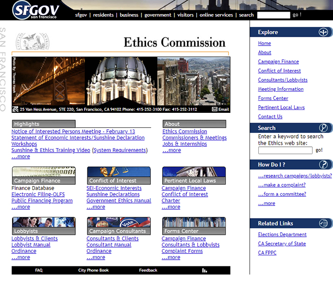

City of San Fransico Ethics Commission. Project Details: website design,website development and CMS maintenance services

San Francisco Ethics Commission
Most sites listed
have changed their look over time. Once the client is given our initial design they are free to edit their
website.
Services Provided
- Website Design
- Website Development
- CMS Maintenance